すごいHaskellたのしく裏話！
田中英行 tanaka.hideyuki@gmail.com
2012-05-26 @Haskell Day 2012
田中英行 tanaka.hideyuki@gmail.com
2012-05-26 @Haskell Day 2012
(株)Preferred Infrastracture勤務
英語が好きじゃない
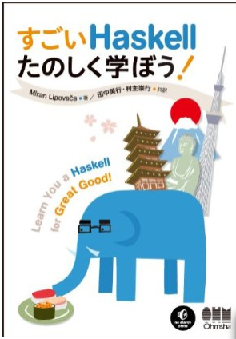
好調に売れているようです > m(´･_･`)m
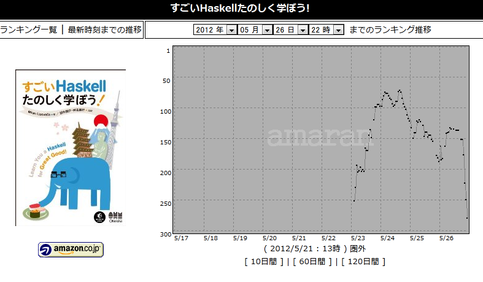
Amazonのおすすめメールが元ネタらしい
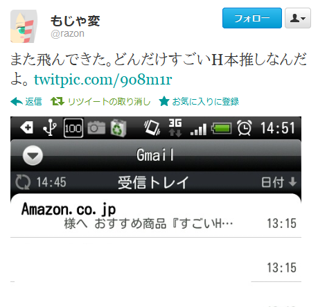
Learn you a Haskell for Great Good! の和訳
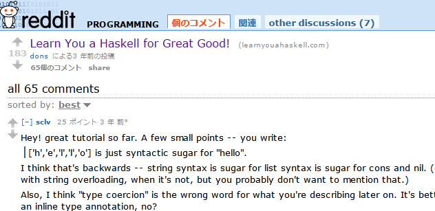
Redditで書籍化されたということを知る
せっかくだししっかり読むか
変なタイトルだけど、普通の入門書っぽいなあ。挿絵は味があっていいな
解説がわかりやすいな。流れも自然だ。普通の入門書だけど
すごい解説がしっかりしてるな。ごまかしてるところがあんまりない。入門書だけど
工ｴｴｪｪ(´ﾟдﾟ｀)ｪｪｴｴ工
Learn You a Haskell やべえ
そして原著者のMiran Lipovacaさんにメールを送った
僕> （要約）LYAHすごい良かったので訳したいヨ！
Miranさん> （要約）いいよ！
これが去年の4-5月頃
その後山本さん（プログラミングHaskellの訳者）から オーム社の鹿野さんへ。
オーム社の企画として採択。 これが去年の7月。
メールから抜粋
元のタイトル、"Learn You a Haskell for Great Good!"ってどういう意味やねん？
そういえば、"for great good"ってどういうニュアンスなのか気になっています。 まさか、「大義の為にHaskellを学ばう」ってわけじゃないですよね？？
ネイティブに聞いたところ、まったく英語ではないので、深く考えるなと言わ れました。:) "great good" で検索すると、この本が最初にヒットすることが それを裏付けていると思います。
深く考えてはいけないらしい。
元のタイトルから離れていく
これは酷い…ので？
を経て、最終的に現タイトルに。
8月 - とりあえず サンク を作って満足。
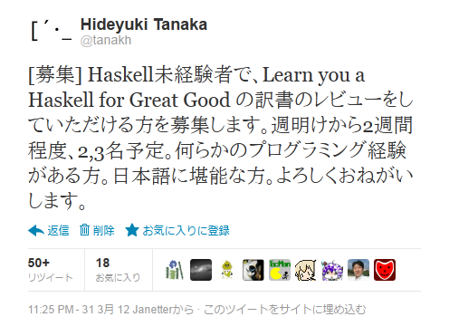
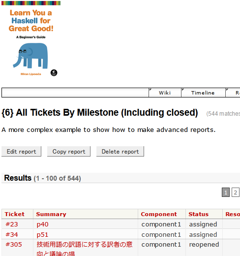
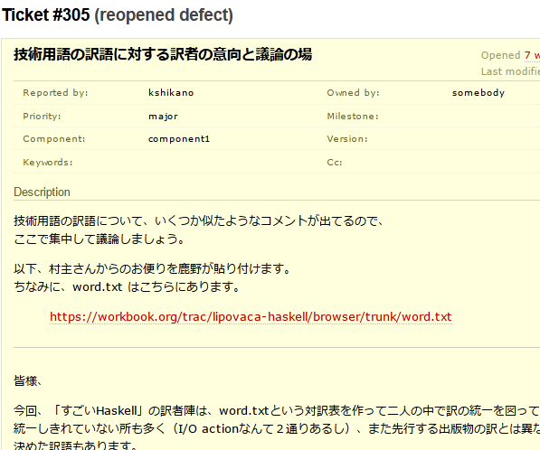
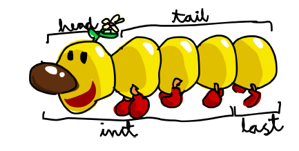
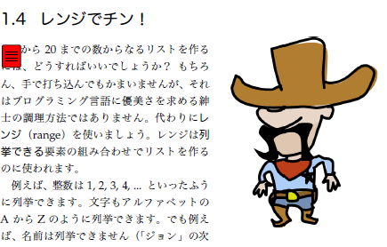
レビュアーさんのブログより：
http://yusukekokubo.github.com/blog/2012/05/07/lean-you-a-haskell-for-great-good-ja/
asパターンの訳注がどうなるのか期待して見守ってましたが最終的には無難な感じに落ち着きましたね
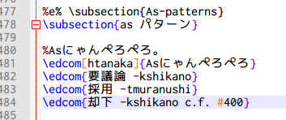
（なぜか僕が書いたことになってる…）
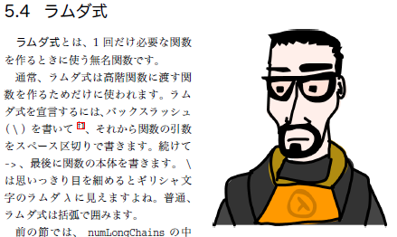
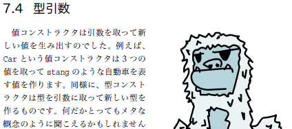
本文ではbytestring化は簡単と書いてあるけど…
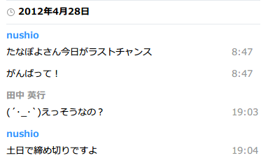
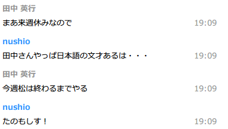
オーム社編集部の方々、レビュアーの方々、 そしてMiranさん、村主くん。 僕を支えてくれた、家族、恋人。 この場を借りて御礼申し上げます。
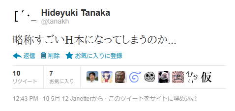
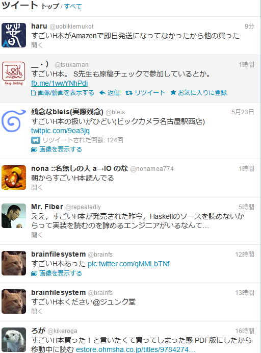
どういうことなんだ…（レビュアーの方のブログです）
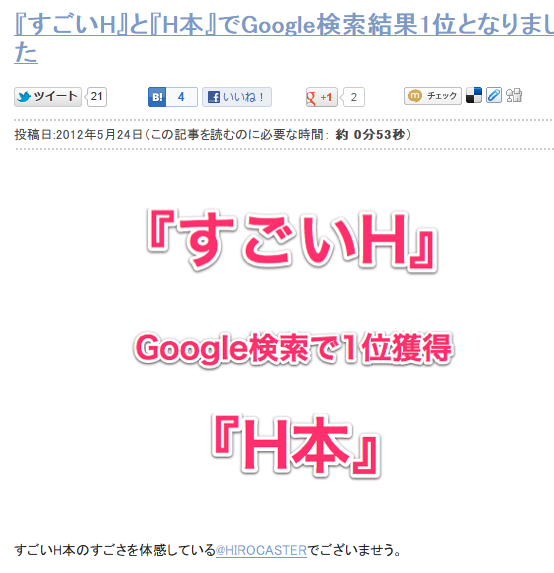
みなさま是非本書で